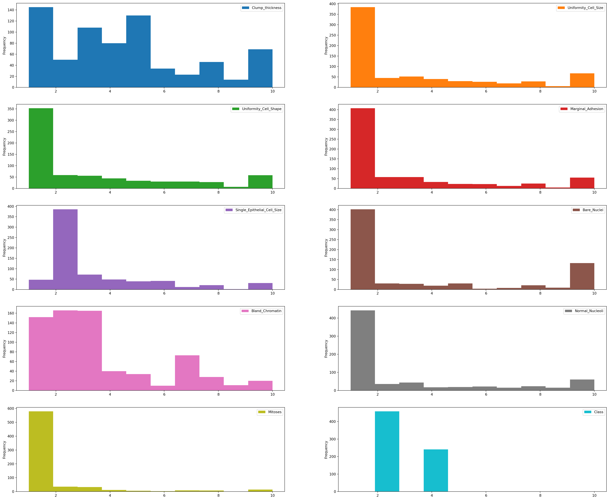
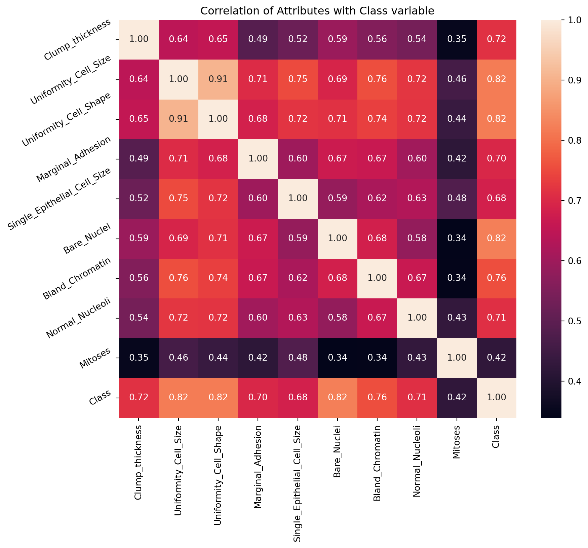
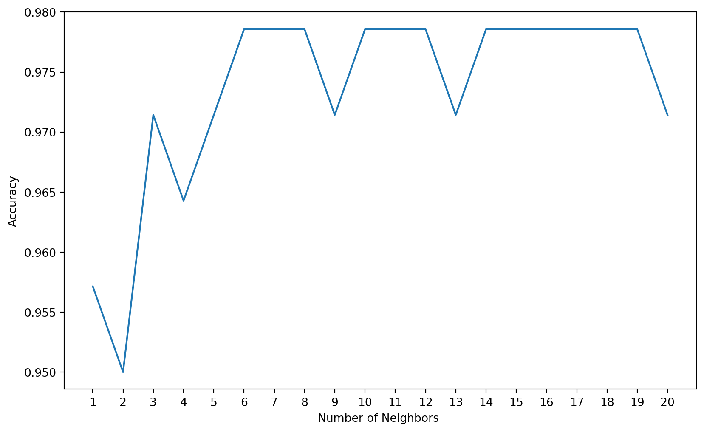
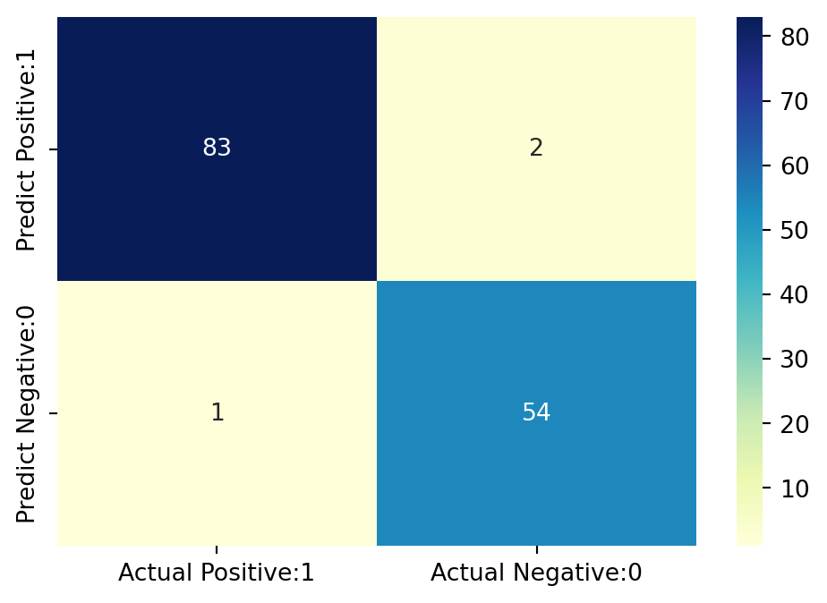
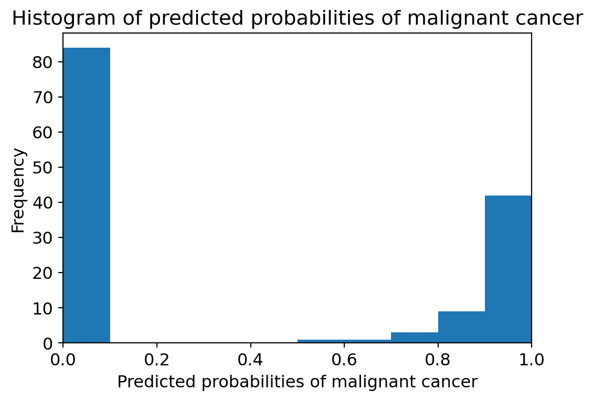
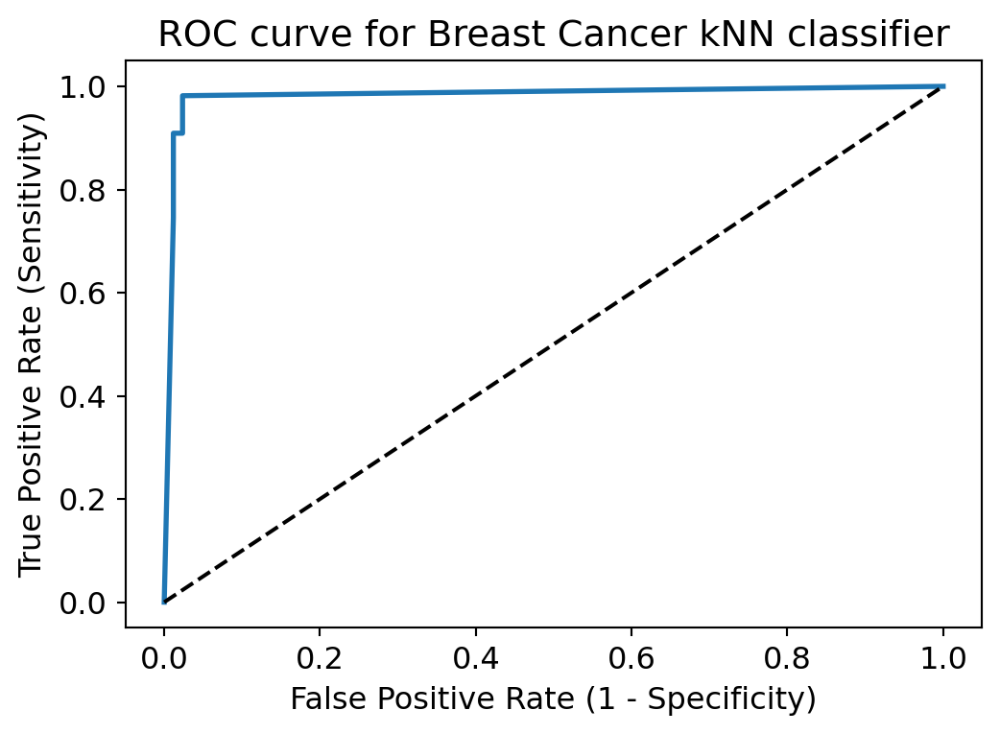

import numpy as np # linear algebra
import pandas as pd # data processing, CSV file I/O (e.g. pd.read_csv)
import matplotlib.pyplot as plt # for data visualization purposes
import seaborn as sns # for data visualization
import sklearn # for Machine Learning
Chapter # 03
K Nearest Neighbor (KNN) Algorithm
Chapter # 03
K Nearest Neighbor (KNN) Algorithm
0.1 Introduction
1 Importing Necessary Python Packages
Please note that before you import Python packages here, you need to install them in Terminal by running the following code - pip install numpy for numpy package for example.
2 Checking the Working Directory
import os
os.getcwd() # Checking current working directory3 Importing Dataset
pd.__version__ # 2.2.3
np.__version__ # 2.2.1
df = pd.read_csv("DATA/breast-cancer-wisconsin.txt", header=None)4 Metadata
df.shape
df.info()
df.head()<class 'pandas.core.frame.DataFrame'>
RangeIndex: 699 entries, 0 to 698
Data columns (total 11 columns):
# Column Non-Null Count Dtype
--- ------ -------------- -----
0 0 699 non-null int64
1 1 699 non-null int64
2 2 699 non-null int64
3 3 699 non-null int64
4 4 699 non-null int64
5 5 699 non-null int64
6 6 699 non-null object
7 7 699 non-null int64
8 8 699 non-null int64
9 9 699 non-null int64
10 10 699 non-null int64
dtypes: int64(10), object(1)
memory usage: 60.2+ KB| 0 | 1 | 2 | 3 | 4 | 5 | 6 | 7 | 8 | 9 | 10 | |
|---|---|---|---|---|---|---|---|---|---|---|---|
| 0 | 1000025 | 5 | 1 | 1 | 1 | 2 | 1 | 3 | 1 | 1 | 2 |
| 1 | 1002945 | 5 | 4 | 4 | 5 | 7 | 10 | 3 | 2 | 1 | 2 |
| 2 | 1015425 | 3 | 1 | 1 | 1 | 2 | 2 | 3 | 1 | 1 | 2 |
| 3 | 1016277 | 6 | 8 | 8 | 1 | 3 | 4 | 3 | 7 | 1 | 2 |
| 4 | 1017023 | 4 | 1 | 1 | 3 | 2 | 1 | 3 | 1 | 1 | 2 |
5 Some Preprocessing on the Dataset
5.1 Assigning Column Names
col_names = ['Id', 'Clump_thickness', 'Uniformity_Cell_Size', 'Uniformity_Cell_Shape', 'Marginal_Adhesion','Single_Epithelial_Cell_Size', 'Bare_Nuclei', 'Bland_Chromatin', 'Normal_Nucleoli', 'Mitoses', 'Class']
df.columns = col_names
df.columns
df.info()<class 'pandas.core.frame.DataFrame'>
RangeIndex: 699 entries, 0 to 698
Data columns (total 11 columns):
# Column Non-Null Count Dtype
--- ------ -------------- -----
0 Id 699 non-null int64
1 Clump_thickness 699 non-null int64
2 Uniformity_Cell_Size 699 non-null int64
3 Uniformity_Cell_Shape 699 non-null int64
4 Marginal_Adhesion 699 non-null int64
5 Single_Epithelial_Cell_Size 699 non-null int64
6 Bare_Nuclei 699 non-null object
7 Bland_Chromatin 699 non-null int64
8 Normal_Nucleoli 699 non-null int64
9 Mitoses 699 non-null int64
10 Class 699 non-null int64
dtypes: int64(10), object(1)
memory usage: 60.2+ KBdf.head()| Id | Clump_thickness | Uniformity_Cell_Size | Uniformity_Cell_Shape | Marginal_Adhesion | Single_Epithelial_Cell_Size | Bare_Nuclei | Bland_Chromatin | Normal_Nucleoli | Mitoses | Class | |
|---|---|---|---|---|---|---|---|---|---|---|---|
| 0 | 1000025 | 5 | 1 | 1 | 1 | 2 | 1 | 3 | 1 | 1 | 2 |
| 1 | 1002945 | 5 | 4 | 4 | 5 | 7 | 10 | 3 | 2 | 1 | 2 |
| 2 | 1015425 | 3 | 1 | 1 | 1 | 2 | 2 | 3 | 1 | 1 | 2 |
| 3 | 1016277 | 6 | 8 | 8 | 1 | 3 | 4 | 3 | 7 | 1 | 2 |
| 4 | 1017023 | 4 | 1 | 1 | 3 | 2 | 1 | 3 | 1 | 1 | 2 |
5.2 Dropping Redundant Columns
df.drop('Id', axis=1, inplace=True)
df.info()
df.dtypes<class 'pandas.core.frame.DataFrame'>
RangeIndex: 699 entries, 0 to 698
Data columns (total 10 columns):
# Column Non-Null Count Dtype
--- ------ -------------- -----
0 Clump_thickness 699 non-null int64
1 Uniformity_Cell_Size 699 non-null int64
2 Uniformity_Cell_Shape 699 non-null int64
3 Marginal_Adhesion 699 non-null int64
4 Single_Epithelial_Cell_Size 699 non-null int64
5 Bare_Nuclei 699 non-null object
6 Bland_Chromatin 699 non-null int64
7 Normal_Nucleoli 699 non-null int64
8 Mitoses 699 non-null int64
9 Class 699 non-null int64
dtypes: int64(9), object(1)
memory usage: 54.7+ KBClump_thickness int64
Uniformity_Cell_Size int64
Uniformity_Cell_Shape int64
Marginal_Adhesion int64
Single_Epithelial_Cell_Size int64
Bare_Nuclei object
Bland_Chromatin int64
Normal_Nucleoli int64
Mitoses int64
Class int64
dtype: objectdf['Class'].value_counts()Class
2 458
4 241
Name: count, dtype: int645.3 Changing Data Types of Variables
df['Bare_Nuclei'] = pd.to_numeric(df['Bare_Nuclei'], errors='coerce')
df.dtypesClump_thickness int64
Uniformity_Cell_Size int64
Uniformity_Cell_Shape int64
Marginal_Adhesion int64
Single_Epithelial_Cell_Size int64
Bare_Nuclei float64
Bland_Chromatin int64
Normal_Nucleoli int64
Mitoses int64
Class int64
dtype: object5.4 Checking Missing Observations in the Dataset
df.isnull().sum() # Checking missing values in variables
df.isna().sum() # Checking missing values in the dataframe Clump_thickness 0
Uniformity_Cell_Size 0
Uniformity_Cell_Shape 0
Marginal_Adhesion 0
Single_Epithelial_Cell_Size 0
Bare_Nuclei 16
Bland_Chromatin 0
Normal_Nucleoli 0
Mitoses 0
Class 0
dtype: int64df['Bare_Nuclei'].value_counts()Bare_Nuclei
1.0 402
10.0 132
2.0 30
5.0 30
3.0 28
8.0 21
4.0 19
9.0 9
7.0 8
6.0 4
Name: count, dtype: int64df['Bare_Nuclei'].unique()array([ 1., 10., 2., 4., 3., 9., 7., nan, 5., 8., 6.])6 Summary Statistics
round(df.describe(),2).transpose()| count | mean | std | min | 25% | 50% | 75% | max | |
|---|---|---|---|---|---|---|---|---|
| Clump_thickness | 699.0 | 4.42 | 2.82 | 1.0 | 2.0 | 4.0 | 6.0 | 10.0 |
| Uniformity_Cell_Size | 699.0 | 3.13 | 3.05 | 1.0 | 1.0 | 1.0 | 5.0 | 10.0 |
| Uniformity_Cell_Shape | 699.0 | 3.21 | 2.97 | 1.0 | 1.0 | 1.0 | 5.0 | 10.0 |
| Marginal_Adhesion | 699.0 | 2.81 | 2.86 | 1.0 | 1.0 | 1.0 | 4.0 | 10.0 |
| Single_Epithelial_Cell_Size | 699.0 | 3.22 | 2.21 | 1.0 | 2.0 | 2.0 | 4.0 | 10.0 |
| Bare_Nuclei | 683.0 | 3.54 | 3.64 | 1.0 | 1.0 | 1.0 | 6.0 | 10.0 |
| Bland_Chromatin | 699.0 | 3.44 | 2.44 | 1.0 | 2.0 | 3.0 | 5.0 | 10.0 |
| Normal_Nucleoli | 699.0 | 2.87 | 3.05 | 1.0 | 1.0 | 1.0 | 4.0 | 10.0 |
| Mitoses | 699.0 | 1.59 | 1.72 | 1.0 | 1.0 | 1.0 | 1.0 | 10.0 |
| Class | 699.0 | 2.69 | 0.95 | 2.0 | 2.0 | 2.0 | 4.0 | 4.0 |
7 Data Visualization
plt.rcParams['figure.figsize']=(30,25)
df.plot(kind='hist', bins=10, subplots=True, layout=(5,2), sharex=False, sharey=False)
plt.show()
df.info()<class 'pandas.core.frame.DataFrame'>
RangeIndex: 699 entries, 0 to 698
Data columns (total 10 columns):
# Column Non-Null Count Dtype
--- ------ -------------- -----
0 Clump_thickness 699 non-null int64
1 Uniformity_Cell_Size 699 non-null int64
2 Uniformity_Cell_Shape 699 non-null int64
3 Marginal_Adhesion 699 non-null int64
4 Single_Epithelial_Cell_Size 699 non-null int64
5 Bare_Nuclei 683 non-null float64
6 Bland_Chromatin 699 non-null int64
7 Normal_Nucleoli 699 non-null int64
8 Mitoses 699 non-null int64
9 Class 699 non-null int64
dtypes: float64(1), int64(9)
memory usage: 54.7 KB7.1 Multivariate Plots
correlation = df.corr()
correlation['Class'].sort_values(ascending=False)Class 1.000000
Bare_Nuclei 0.822696
Uniformity_Cell_Shape 0.818934
Uniformity_Cell_Size 0.817904
Bland_Chromatin 0.756616
Clump_thickness 0.716001
Normal_Nucleoli 0.712244
Marginal_Adhesion 0.696800
Single_Epithelial_Cell_Size 0.682785
Mitoses 0.423170
Name: Class, dtype: float64Interpretation: The correlation coefficient ranges from -1 to +1.
When it is close to +1, this signifies that there is a strong positive correlation. So, we can see that there is a strong positive correlation between Class and Bare_Nuclei, Class and Uniformity_Cell_Shape, Class and Uniformity_Cell_Size.
When it is close to -1, it means that there is a strong negative correlation. When it is close to 0, it means that there is no correlation.
We can see that all the variables are positively correlated with Class variable. Some variables are strongly positive correlated while some variables are negatively correlated.
7.2 Discover Pattern and Relationship
An important step in EDA is to discover patterns and relationships between variables in the dataset. I will use the seaborn heatmap to explore the patterns and relationships in the dataset.
plt.figure(figsize=(10,8))
plt.title('Correlation of Attributes with Class variable')
a = sns.heatmap(correlation, square=True, annot=True, fmt='.2f', linecolor='white')
a.set_xticklabels(a.get_xticklabels(), rotation=90)
a.set_yticklabels(a.get_yticklabels(), rotation=30)
plt.show()
8 Declare Feature Vector and Target Variable
X = df.drop(['Class'], axis = 1)
y = df["Class"]9 Split Data into Separate Training and Test Set
# Split X and y into training and testing sets
from sklearn.model_selection import train_test_split
X_train, X_test, y_train, y_test = train_test_split(X, y, test_size = 0.2, random_state = 0)# check the shape of X_train and X_test
X_train.shape, X_test.shape((559, 9), (140, 9))10 Feature Engineering
Feature Engineering is the process of transforming raw data into useful features that help us to understand our model better and increase its predictive power. I will carry out feature engineering on different types of variables.
# check data types in X_train
X_train.dtypesClump_thickness int64
Uniformity_Cell_Size int64
Uniformity_Cell_Shape int64
Marginal_Adhesion int64
Single_Epithelial_Cell_Size int64
Bare_Nuclei float64
Bland_Chromatin int64
Normal_Nucleoli int64
Mitoses int64
dtype: object# check missing values in numerical variables in X_train
X_train.isnull().sum()Clump_thickness 0
Uniformity_Cell_Size 0
Uniformity_Cell_Shape 0
Marginal_Adhesion 0
Single_Epithelial_Cell_Size 0
Bare_Nuclei 13
Bland_Chromatin 0
Normal_Nucleoli 0
Mitoses 0
dtype: int6410.1 Engineering Missing Values in Variables
# check missing values in numerical variables in X_test
X_test.isnull().sum()Clump_thickness 0
Uniformity_Cell_Size 0
Uniformity_Cell_Shape 0
Marginal_Adhesion 0
Single_Epithelial_Cell_Size 0
Bare_Nuclei 3
Bland_Chromatin 0
Normal_Nucleoli 0
Mitoses 0
dtype: int64# print percentage of missing values in the numerical variables in training set
for col in X_train.columns:
if X_train[col].isnull().mean()>0:
print(col, round(X_train[col].isnull().mean(),4))Bare_Nuclei 0.0233Assumption I assume that the data are missing completely at random (MCAR). There are two methods which can be used to impute missing values. One is mean or median imputation and other one is random sample imputation. When there are outliers in the dataset, we should use median imputation. So, I will use median imputation because median imputation is robust to outliers.
I will impute missing values with the appropriate statistical measures of the data, in this case median. Imputation should be done over the training set, and then propagated to the test set. It means that the statistical measures to be used to fill missing values both in train and test set, should be extracted from the train set only. This is to avoid overfitting.
# impute missing values in X_train and X_test with respective column median in X_train
for df in [X_train, X_test]:
for col in X_train.columns:
col_median=X_train[col].median()
df[col].fillna(col_median, inplace=True) # check again missing values in numerical variables in X_train
X_train.isnull().sum()Clump_thickness 0
Uniformity_Cell_Size 0
Uniformity_Cell_Shape 0
Marginal_Adhesion 0
Single_Epithelial_Cell_Size 0
Bare_Nuclei 0
Bland_Chromatin 0
Normal_Nucleoli 0
Mitoses 0
dtype: int64# check missing values in numerical variables in X_test
X_test.isnull().sum()Clump_thickness 0
Uniformity_Cell_Size 0
Uniformity_Cell_Shape 0
Marginal_Adhesion 0
Single_Epithelial_Cell_Size 0
Bare_Nuclei 0
Bland_Chromatin 0
Normal_Nucleoli 0
Mitoses 0
dtype: int64We now have training and testing set ready for model building. Before that, we should map all the feature variables onto the same scale. It is called feature scaling. I will do it as follows.
10.2 Feature Selection
Feature selection involves identifying the features that have the greatest explanatory power to predict the target variables. Therere are many techniques that can be used for feature selection. When there are many variables, using feature selection is very much important. Otherwise, noises might be introduced in the model.
from sklearn.feature_selection import SelectKBest, chi2, f_classifchi_feature = SelectKBest(chi2, k = 4).fit(X_train, y_train)
print ('Score: ', chi_feature.scores_)
print ('Features: ', X_train.columns)Score: [ 493.52822606 1144.54028237 1046.47720631 844.84992698 404.07603727
1364.87717094 532.42045225 951.992508 180.65784477]
Features: Index(['Clump_thickness', 'Uniformity_Cell_Size', 'Uniformity_Cell_Shape',
'Marginal_Adhesion', 'Single_Epithelial_Cell_Size', 'Bare_Nuclei',
'Bland_Chromatin', 'Normal_Nucleoli', 'Mitoses'],
dtype='object')anova_feature = SelectKBest (f_classif, k = 4).fit(X_train, y_train)
print ('Scores: ', anova_feature.scores_)
print ('Features: ', X_train.columns)Scores: [ 545.20592252 1142.16232995 1093.33969603 582.15032766 518.143572
1022.11887635 716.06901174 593.48561929 124.1776932 ]
Features: Index(['Clump_thickness', 'Uniformity_Cell_Size', 'Uniformity_Cell_Shape',
'Marginal_Adhesion', 'Single_Epithelial_Cell_Size', 'Bare_Nuclei',
'Bland_Chromatin', 'Normal_Nucleoli', 'Mitoses'],
dtype='object')10.3 Feature Scaling
cols = X_train.columnsfrom sklearn.preprocessing import StandardScaler
scaler = StandardScaler()
X_train = scaler.fit_transform(X_train)
X_test = scaler.transform(X_test)X_train = pd.DataFrame(X_train, columns=[cols])
X_test = pd.DataFrame(X_test, columns=[cols])
X_train.head()| Clump_thickness | Uniformity_Cell_Size | Uniformity_Cell_Shape | Marginal_Adhesion | Single_Epithelial_Cell_Size | Bare_Nuclei | Bland_Chromatin | Normal_Nucleoli | Mitoses | |
|---|---|---|---|---|---|---|---|---|---|
| 0 | 2.028383 | 0.299506 | 0.289573 | 1.119077 | -0.546543 | 1.858357 | -0.577774 | 0.041241 | -0.324258 |
| 1 | 1.669451 | 2.257680 | 2.304569 | -0.622471 | 3.106879 | 1.297589 | -0.159953 | 0.041241 | -0.324258 |
| 2 | -1.202005 | -0.679581 | -0.717925 | 0.074148 | -1.003220 | -0.104329 | -0.995595 | -0.608165 | -0.324258 |
| 3 | -0.125209 | -0.026856 | -0.046260 | -0.622471 | -0.546543 | -0.665096 | -0.159953 | 0.041241 | -0.324258 |
| 4 | 0.233723 | -0.353219 | -0.382092 | -0.274161 | -0.546543 | -0.665096 | -0.577774 | -0.283462 | -0.324258 |
11 Fit K Neighbours Classifier to the Training Set
# import KNeighbors ClaSSifier from sklearn
from sklearn.neighbors import KNeighborsClassifier
# instantiate the model
knn = KNeighborsClassifier(n_neighbors=3)
# fit the model to the training set
knn.fit(X_train, y_train)KNeighborsClassifier(n_neighbors=3)In a Jupyter environment, please rerun this cell to show the HTML representation or trust the notebook.
On GitHub, the HTML representation is unable to render, please try loading this page with nbviewer.org.
KNeighborsClassifier(n_neighbors=3)
12 Predict Test-set Results
y_pred = knn.predict(X_test)
y_predarray([2, 2, 4, 2, 4, 2, 4, 2, 4, 2, 2, 2, 4, 4, 4, 2, 2, 4, 4, 2, 4, 4,
2, 2, 2, 4, 2, 2, 4, 4, 2, 2, 2, 2, 2, 2, 2, 4, 2, 2, 2, 2, 2, 2,
4, 4, 2, 4, 2, 4, 4, 2, 2, 4, 2, 2, 2, 2, 2, 2, 4, 2, 2, 4, 4, 4,
4, 2, 2, 4, 2, 2, 4, 4, 2, 2, 2, 2, 4, 2, 2, 2, 4, 2, 2, 2, 4, 2,
4, 4, 2, 2, 2, 4, 2, 2, 2, 4, 2, 4, 4, 2, 2, 2, 4, 2, 2, 2, 2, 2,
4, 4, 4, 2, 2, 2, 2, 2, 4, 4, 4, 4, 2, 4, 2, 2, 4, 4, 4, 4, 4, 2,
2, 4, 4, 2, 2, 4, 2, 2])predict_proba method predict_proba method gives the probabilities for the target variable(2 and 4) in this case, in array form.
2 is for probability of benign cancer and 4 is for probability of malignant cancer.
knn.predict_proba(X_test)array([[1. , 0. ],
[1. , 0. ],
[0.33333333, 0.66666667],
[1. , 0. ],
[0. , 1. ],
[1. , 0. ],
[0. , 1. ],
[1. , 0. ],
[0. , 1. ],
[0.66666667, 0.33333333],
[1. , 0. ],
[1. , 0. ],
[0. , 1. ],
[0.33333333, 0.66666667],
[0. , 1. ],
[1. , 0. ],
[1. , 0. ],
[0. , 1. ],
[0. , 1. ],
[1. , 0. ],
[0. , 1. ],
[0. , 1. ],
[1. , 0. ],
[1. , 0. ],
[1. , 0. ],
[0. , 1. ],
[1. , 0. ],
[1. , 0. ],
[0. , 1. ],
[0. , 1. ],
[1. , 0. ],
[1. , 0. ],
[1. , 0. ],
[1. , 0. ],
[1. , 0. ],
[0.66666667, 0.33333333],
[1. , 0. ],
[0. , 1. ],
[1. , 0. ],
[1. , 0. ],
[1. , 0. ],
[1. , 0. ],
[1. , 0. ],
[1. , 0. ],
[0. , 1. ],
[0. , 1. ],
[1. , 0. ],
[0. , 1. ],
[1. , 0. ],
[0. , 1. ],
[0. , 1. ],
[1. , 0. ],
[1. , 0. ],
[0. , 1. ],
[1. , 0. ],
[1. , 0. ],
[1. , 0. ],
[1. , 0. ],
[0.66666667, 0.33333333],
[1. , 0. ],
[0. , 1. ],
[1. , 0. ],
[1. , 0. ],
[0. , 1. ],
[0. , 1. ],
[0.33333333, 0.66666667],
[0. , 1. ],
[1. , 0. ],
[1. , 0. ],
[0. , 1. ],
[1. , 0. ],
[1. , 0. ],
[0. , 1. ],
[0. , 1. ],
[1. , 0. ],
[1. , 0. ],
[1. , 0. ],
[1. , 0. ],
[0. , 1. ],
[1. , 0. ],
[1. , 0. ],
[1. , 0. ],
[0. , 1. ],
[1. , 0. ],
[1. , 0. ],
[1. , 0. ],
[0. , 1. ],
[1. , 0. ],
[0. , 1. ],
[0. , 1. ],
[1. , 0. ],
[1. , 0. ],
[0.66666667, 0.33333333],
[0. , 1. ],
[1. , 0. ],
[1. , 0. ],
[1. , 0. ],
[0. , 1. ],
[1. , 0. ],
[0. , 1. ],
[0. , 1. ],
[1. , 0. ],
[1. , 0. ],
[1. , 0. ],
[0. , 1. ],
[1. , 0. ],
[1. , 0. ],
[1. , 0. ],
[1. , 0. ],
[1. , 0. ],
[0. , 1. ],
[0.33333333, 0.66666667],
[0. , 1. ],
[1. , 0. ],
[1. , 0. ],
[1. , 0. ],
[1. , 0. ],
[1. , 0. ],
[0. , 1. ],
[0. , 1. ],
[0. , 1. ],
[0.33333333, 0.66666667],
[1. , 0. ],
[0. , 1. ],
[1. , 0. ],
[1. , 0. ],
[0.33333333, 0.66666667],
[0.33333333, 0.66666667],
[0. , 1. ],
[0. , 1. ],
[0. , 1. ],
[1. , 0. ],
[1. , 0. ],
[0.33333333, 0.66666667],
[0. , 1. ],
[1. , 0. ],
[1. , 0. ],
[0. , 1. ],
[1. , 0. ],
[1. , 0. ]])# probability of getting output as 2 - benign cancer
knn.predict_proba(X_test)[:,0]array([1. , 1. , 0.33333333, 1. , 0. ,
1. , 0. , 1. , 0. , 0.66666667,
1. , 1. , 0. , 0.33333333, 0. ,
1. , 1. , 0. , 0. , 1. ,
0. , 0. , 1. , 1. , 1. ,
0. , 1. , 1. , 0. , 0. ,
1. , 1. , 1. , 1. , 1. ,
0.66666667, 1. , 0. , 1. , 1. ,
1. , 1. , 1. , 1. , 0. ,
0. , 1. , 0. , 1. , 0. ,
0. , 1. , 1. , 0. , 1. ,
1. , 1. , 1. , 0.66666667, 1. ,
0. , 1. , 1. , 0. , 0. ,
0.33333333, 0. , 1. , 1. , 0. ,
1. , 1. , 0. , 0. , 1. ,
1. , 1. , 1. , 0. , 1. ,
1. , 1. , 0. , 1. , 1. ,
1. , 0. , 1. , 0. , 0. ,
1. , 1. , 0.66666667, 0. , 1. ,
1. , 1. , 0. , 1. , 0. ,
0. , 1. , 1. , 1. , 0. ,
1. , 1. , 1. , 1. , 1. ,
0. , 0.33333333, 0. , 1. , 1. ,
1. , 1. , 1. , 0. , 0. ,
0. , 0.33333333, 1. , 0. , 1. ,
1. , 0.33333333, 0.33333333, 0. , 0. ,
0. , 1. , 1. , 0.33333333, 0. ,
1. , 1. , 0. , 1. , 1. ])# probability of getting output as 4 - malignant cancer
knn.predict_proba(X_test)[:,1]array([0. , 0. , 0.66666667, 0. , 1. ,
0. , 1. , 0. , 1. , 0.33333333,
0. , 0. , 1. , 0.66666667, 1. ,
0. , 0. , 1. , 1. , 0. ,
1. , 1. , 0. , 0. , 0. ,
1. , 0. , 0. , 1. , 1. ,
0. , 0. , 0. , 0. , 0. ,
0.33333333, 0. , 1. , 0. , 0. ,
0. , 0. , 0. , 0. , 1. ,
1. , 0. , 1. , 0. , 1. ,
1. , 0. , 0. , 1. , 0. ,
0. , 0. , 0. , 0.33333333, 0. ,
1. , 0. , 0. , 1. , 1. ,
0.66666667, 1. , 0. , 0. , 1. ,
0. , 0. , 1. , 1. , 0. ,
0. , 0. , 0. , 1. , 0. ,
0. , 0. , 1. , 0. , 0. ,
0. , 1. , 0. , 1. , 1. ,
0. , 0. , 0.33333333, 1. , 0. ,
0. , 0. , 1. , 0. , 1. ,
1. , 0. , 0. , 0. , 1. ,
0. , 0. , 0. , 0. , 0. ,
1. , 0.66666667, 1. , 0. , 0. ,
0. , 0. , 0. , 1. , 1. ,
1. , 0.66666667, 0. , 1. , 0. ,
0. , 0.66666667, 0.66666667, 1. , 1. ,
1. , 0. , 0. , 0.66666667, 1. ,
0. , 0. , 1. , 0. , 0. ])13 Check Accuracy Score
from sklearn.metrics import accuracy_score
print('Model accuracy score: {0:0.4f}'. format(accuracy_score(y_test, y_pred)))Model accuracy score: 0.9714Here, y_test are the true class labels and y_pred are the predicted class labels in the test-set.
13.1 Compare the Train-set and Test-set Accuracy
Now, I will compare the train-set and test-set accuracy to check for overfitting.
y_pred_train = knn.predict(X_train)
print('Training-set accuracy score: {0:0.4f}'. format(accuracy_score(y_train, y_pred_train)))Training-set accuracy score: 0.982114 Check for Overfitting and Underfitting
# print the scores on training and test set
print('Training set score: {:.4f}'.format(knn.score(X_train, y_train)))
print('Test set score: {:.4f}'.format(knn.score(X_test, y_test)))Training set score: 0.9821
Test set score: 0.9714The training-set accuracy score is 0.9821 while the test-set accuracy to be 0.9714. These two values are quite comparable. So, there is no question of overfitting.
14.1 Compare Model Accuracy with Null Accuracy
So, the model accuracy is 0.9714. But, we cannot say that our model is very good based on the above accuracy. We must compare it with the null accuracy. Null accuracy is the accuracy that could be achieved by always predicting the most frequent class.
So, we should first check the class distribution in the test set.
# check class distribution in test set
y_test.value_counts()Class
2 85
4 55
Name: count, dtype: int64We can see that the occurences of most frequent class is 85. So, we can calculate null accuracy by dividing 85 by total number of occurences.
# check null accuracy score
null_accuracy = (85/(85+55))
print('Null accuracy score: {0:0.4f}'. format(null_accuracy))Null accuracy score: 0.6071We can see that our model accuracy score is 0.9714 but null accuracy score is 0.6071. So, we can conclude that our K Nearest Neighbors model is doing a very good job in predicting the class labels.
15 Rebuild KNN Classification Model Using Different Values of K
# instantiate the model with k=5
knn_5 = KNeighborsClassifier(n_neighbors=5)
# fit the model to the training set
knn_5.fit(X_train, y_train)
# predict on the test-set
y_pred_5 = knn_5.predict(X_test)
print('Model accuracy score with k=5 : {0:0.4f}'. format(accuracy_score(y_test, y_pred_5)))Model accuracy score with k=5 : 0.971415.1 Rebuild KNN Classification Model Using K=6
# instantiate the model with k=6
knn_6 = KNeighborsClassifier(n_neighbors=6)
# fit the model to the training set
knn_6.fit(X_train, y_train)
# predict on the test-set
y_pred_6 = knn_6.predict(X_test)
print('Model accuracy score with k=6 : {0:0.4f}'. format(accuracy_score(y_test, y_pred_6)))Model accuracy score with k=6 : 0.978615.2 Rebuild KNN Classification Model Using K=7
# instantiate the model with k=7
knn_7 = KNeighborsClassifier(n_neighbors=7)
# fit the model to the training set
knn_7.fit(X_train, y_train)
# predict on the test-set
y_pred_7 = knn_7.predict(X_test)
print('Model accuracy score with k=7 : {0:0.4f}'. format(accuracy_score(y_test, y_pred_7)))Model accuracy score with k=7 : 0.978615.3 Rebuild KNN Classification Model Using K=8
# instantiate the model with k=8
knn_8 = KNeighborsClassifier(n_neighbors=8)
# fit the model to the training set
knn_8.fit(X_train, y_train)
# predict on the test-set
y_pred_8 = knn_8.predict(X_test)
print('Model accuracy score with k=8 : {0:0.4f}'. format(accuracy_score(y_test, y_pred_8)))Model accuracy score with k=8 : 0.978615.4 Rebuild KNN Classification Model Using K=9
# instantiate the model with k=9
knn_9 = KNeighborsClassifier(n_neighbors=9)
# fit the model to the training set
knn_9.fit(X_train, y_train)
# predict on the test-set
y_pred_9 = knn_9.predict(X_test)
print('Model accuracy score with k=9 : {0:0.4f}'. format(accuracy_score(y_test, y_pred_9)))Model accuracy score with k=9 : 0.9714Interpretation: Our original model accuracy score with k=3 is 0.9714. Now, we can see that we get same accuracy score of 0.9714 with k=5. But, if we increase the value of k further, this would result in enhanced accuracy.
With k=6,7,8 we get accuracy score of 0.9786. So, it results in performance improvement.
If we increase k to 9, then accuracy decreases again to 0.9714.
Now, based on the above analysis we can conclude that our classification model accuracy is very good. Our model is doing a very good job in terms of predicting the class labels.
But, it does not give the underlying distribution of values. Also, it does not tell anything about the type of errors our classifer is making.
We have another tool called Confusion matrix that comes to our rescue.
16 Automating the Calculation of the Value of K
from sklearn import metricsmean_acc = np.zeros(20)
for i in range(1,21):
#Train Model and Predict
knn = KNeighborsClassifier(n_neighbors = i).fit(X_train,y_train)
yhat= knn.predict(X_test)
mean_acc[i-1] = metrics.accuracy_score(y_test, yhat)
mean_accarray([0.95714286, 0.95 , 0.97142857, 0.96428571, 0.97142857,
0.97857143, 0.97857143, 0.97857143, 0.97142857, 0.97857143,
0.97857143, 0.97857143, 0.97142857, 0.97857143, 0.97857143,
0.97857143, 0.97857143, 0.97857143, 0.97857143, 0.97142857])loc = np.arange(1,21,step=1.0)
plt.figure(figsize = (10, 6))
plt.plot(range(1,21), mean_acc)
plt.xticks(loc)
plt.xlabel('Number of Neighbors ')
plt.ylabel('Accuracy')
plt.show()
17 Hyperparameter Tuning
A hyperparameter is a parameter of the model that is set before the start of learning process. Different machine learning models have different hyperparameters. You can find out more about the different hyperparameters of k-NN here.
We will use the Exhaustive Grid Search technique for hyperparameter optimization. An exhaustive grid search takes in as many hyperparameters as you would like, and tries every single possible combination of the hyperparameters as well as as many cross-validations as you would like it to perform. An exhaustive grid search is a good way to determine the best hyperparameter values to use, but it can quickly become time consuming with every additional parameter value and cross-validation that you add.
from sklearn.model_selection import GridSearchCVWe will use three hyperparamters- n-neighbors, weights and metric.
n_neighbors: Decide the best k based on the values we have computed earlier.weights: Check whether adding weights to the data points is beneficial to the model or not. ‘uniform’ assigns no weight, while ‘distance’ weighs points by the inverse of their distances meaning nearer points will have more weight than the farther points.metric: The distance metric to be used will calculating the similarity.
grid_params = { 'n_neighbors' : [3,4,5,6,7,8,9,10,11,12],
'weights' : ['uniform','distance'],
'metric' : ['minkowski','euclidean','manhattan']}gs = GridSearchCV(KNeighborsClassifier(), grid_params, verbose = 1, cv=3, n_jobs = -1)Since we have provided the class validation score as 3( cv= 3), Grid Search will evaluate the model 10 x 2 x 3 x 3 = 180 times with different hyperparameters.
# fit the model on our train set
g_res = gs.fit(X_train, y_train)Fitting 3 folds for each of 60 candidates, totalling 180 fits# find the best score
g_res.best_score_np.float64(0.9696394686907022)# get the hyperparameters with the best score
g_res.best_params_{'metric': 'manhattan', 'n_neighbors': 5, 'weights': 'distance'}# use the best hyperparameters
knn = KNeighborsClassifier(n_neighbors = 5, weights = 'distance', \
algorithm = 'brute',metric = 'manhattan')
knn.fit(X_train, y_train)KNeighborsClassifier(algorithm='brute', metric='manhattan', weights='distance')In a Jupyter environment, please rerun this cell to show the HTML representation or trust the notebook.
On GitHub, the HTML representation is unable to render, please try loading this page with nbviewer.org.
KNeighborsClassifier(algorithm='brute', metric='manhattan', weights='distance')
# get a prediction
y_hat = knn.predict(X_train)
y_knn = knn.predict(X_test)from sklearn import metricsprint('Training set accuracy: ', metrics.accuracy_score(y_train, y_hat))
print('Test set accuracy: ', metrics.accuracy_score(y_test, y_knn))Training set accuracy: 1.0
Test set accuracy: 0.978571428571428518 Confusion Matrix
A confusion matrix is a tool for summarizing the performance of a classification algorithm. A confusion matrix will give us a clear picture of classification model performance and the types of errors produced by the model. It gives us a summary of correct and incorrect predictions broken down by each category. The summary is represented in a tabular form.
Four types of outcomes are possible while evaluating a classification model performance. These four outcomes are described below:-
True Positives (TP) – True Positives occur when we predict an observation belongs to a certain class and the observation actually belongs to that class.
True Negatives (TN) – True Negatives occur when we predict an observation does not belong to a certain class and the observation actually does not belong to that class.
False Positives (FP) – False Positives occur when we predict an observation belongs to a certain class but the observation actually does not belong to that class. This type of error is called Type I error.
False Negatives (FN) – False Negatives occur when we predict an observation does not belong to a certain class but the observation actually belongs to that class. This is a very serious error and it is called Type II error.
These four outcomes are summarized in a confusion matrix given below.
# Print the Confusion Matrix with k =3 and slice it into four pieces
from sklearn.metrics import confusion_matrix
cm = confusion_matrix(y_test, y_pred)
print('Confusion matrix\n\n', cm)
print('\nTrue Positives(TP) = ', cm[0,0])
print('\nTrue Negatives(TN) = ', cm[1,1])
print('\nFalse Positives(FP) = ', cm[0,1])
print('\nFalse Negatives(FN) = ', cm[1,0])Confusion matrix
[[83 2]
[ 2 53]]
True Positives(TP) = 83
True Negatives(TN) = 53
False Positives(FP) = 2
False Negatives(FN) = 2The confusion matrix shows 83 + 53 = 136 correct predictions & 2 + 2 = 4 incorrect predictions.
In this case, we have
True Positives(Actual Positive:1 and Predict Positive:1) - 83True Negatives(Actual Negative:0 and Predict Negative:0) - 53False Positives(Actual Negative:0 but Predict Positive:1) - 2 (Type Ierror)False Negatives(Actual Positive:1 but Predict Negative:0) - 2 (Type IIerror)
# Print the Confusion Matrix with k =7 and slice it into four pieces
cm_7 = confusion_matrix(y_test, y_pred_7)
print('Confusion matrix\n\n', cm_7)
print('\nTrue Positives(TP) = ', cm_7[0,0])
print('\nTrue Negatives(TN) = ', cm_7[1,1])
print('\nFalse Positives(FP) = ', cm_7[0,1])
print('\nFalse Negatives(FN) = ', cm_7[1,0])Confusion matrix
[[83 2]
[ 1 54]]
True Positives(TP) = 83
True Negatives(TN) = 54
False Positives(FP) = 2
False Negatives(FN) = 1The above confusion matrix shows 83 + 54 = 137 correct predictions and 2 + 1 = 4 incorrect predictions.
In this case, we have
True Positives(Actual Positive:1 and Predict Positive:1) - 83True Negatives(Actual Negative:0 and Predict Negative:0) - 54False Positives(Actual Negative:0 but Predict Positive:1) - 2 (Type Ierror)False Negatives(Actual Positive:1 but Predict Negative:0) - 1 (Type IIerror)
Comment So, KNN Classification model with k=7 shows more accurate predictions and less number of errors than k=3 model. Hence, we got performance improvement with k=7.
# visualize confusion matrix with seaborn heatmap
plt.figure(figsize=(6,4))
cm_matrix = pd.DataFrame(data=cm_7, columns=['Actual Positive:1', 'Actual Negative:0'],
index=['Predict Positive:1', 'Predict Negative:0'])
sns.heatmap(cm_matrix, annot=True, fmt='d', cmap='YlGnBu')
19 Classification Matrices
19.1 Classification Report
Classification report is another way to evaluate the classification model performance. It displays the precision, recall, f1 and support scores for the model. I have described these terms in later.
We can print a classification report as follows:-
from sklearn.metrics import classification_report
print(classification_report(y_test, y_pred_7)) precision recall f1-score support
2 0.99 0.98 0.98 85
4 0.96 0.98 0.97 55
accuracy 0.98 140
macro avg 0.98 0.98 0.98 140
weighted avg 0.98 0.98 0.98 140
19.2 Classification Accuracy
TP = cm_7[0,0]
TN = cm_7[1,1]
FP = cm_7[0,1]
FN = cm_7[1,0]# print classification accuracy
classification_accuracy = (TP + TN) / float(TP + TN + FP + FN)
print('Classification accuracy : {0:0.4f}'.format(classification_accuracy))Classification accuracy : 0.978619.3 Classification Error
# print classification error
classification_error = (FP + FN) / float(TP + TN + FP + FN)
print('Classification error : {0:0.4f}'.format(classification_error))Classification error : 0.021419.4 Precision
Precision can be defined as the percentage of correctly predicted positive outcomes out of all the predicted positive outcomes. It can be given as the ratio of true positives (TP) to the sum of true and false positives (TP + FP). Precision is a metric that tells us about the quality of positive predictions. So, Precision identifies the proportion of correctly predicted positive outcome. It is more concerned with the positive class than the negative class. Precision is a useful metric in cases where False Positive is a higher concern than False Negatives. Precision is important in music or video recommendation systems, e-commerce websites, etc. Wrong results could lead to customer churn and be harmful to the business.tt
Mathematically, precision can be defined as the ratio of TP to (TP + FP).
# print precision score
precision = TP / float(TP + FP)
print('Precision : {0:0.4f}'.format(precision))Precision : 0.976519.5 Recall
Recall can be defined as the percentage of correctly predicted positive outcomes out of all the actual positive outcomes. It can be given as the ratio of true positives (TP) to the sum of true positives and false negatives (TP + FN). Recall tells us about how well the model identifies true positives. Recall is also called Sensitivity. Recall identifies the proportion of correctly predicted actual positives. Mathematically, recall can be given as the ratio of TP to (TP + FN). Recall is a useful metric in cases where False Negative triumphs over False Positive. Recall is important in medical cases where it doesn’t matter whether we raise a false alarm, but the actual positive cases should not go undetected!
recall = TP / float(TP + FN)
print('Recall or Sensitivity : {0:0.4f}'.format(recall))Recall or Sensitivity : 0.988119.6 Precision vs Recall
Data scientists optimize their model to have higher precision or recall depending on the circumstances. A model with higher recall than precision often makes more positive predictions. A model like this comes with higher false positives and low false negatives. In scenarios like disease prediction, models should always be optimized for recall. False positives are better than false negatives in the healthcare industry.
On the other hand, a model with higher precision will have fewer false positives and more false negatives. If you were to build a bot detection machine learning model for an online store, you may want to optimize for higher precision, since banning legitimate users from the website will lead to a decline in sales.
19.7 f1-score
In practice, when we try to increase the precision of our model, the recall goes down, and vice-versa. The F1-score captures both the trends in a single value:
f1-score = 2/((1/Recall) + (1/Precision))f1-score is the weighted harmonic mean of precision and recall, and so it gives a combined idea about these two metrics. It is maximum when Precision is equal to Recall. The best possible f1-score would be 1.0 and the worst would be 0.0. f1-score is the harmonic mean of precision and recall. So, f1-score is always lower than accuracy measures as they embed precision and recall into their computation. The weighted average of f1-score should be used to compare classifier models, not global accuracy.
19.8 Support
Support is the actual number of occurrences of the class in our dataset.
19.9 True Positive Rate
True Positive Rate is synonymous with Recall.
true_positive_rate = TP / float(TP + FN)
print('True Positive Rate : {0:0.4f}'.format(true_positive_rate))True Positive Rate : 0.988119.10 False Positive Rate
false_positive_rate = FP / float(FP + TN)
print('False Positive Rate : {0:0.4f}'.format(false_positive_rate))False Positive Rate : 0.035719.11 Specificity (True Negative Rate)
specificity = TN / (TN + FP)
print('Specificity : {0:0.4f}'.format(specificity))Specificity : 0.964319.12 Adjusting the Classification Threshold Level
# print the first 10 predicted probabilities of two classes- 2 and 4
y_pred_prob = knn.predict_proba(X_test)[0:10]
y_pred_probarray([[1. , 0. ],
[1. , 0. ],
[0.21219604, 0.78780396],
[1. , 0. ],
[0. , 1. ],
[1. , 0. ],
[0. , 1. ],
[1. , 0. ],
[0. , 1. ],
[0.40998626, 0.59001374]])Observations In each row, the numbers sum to 1. There are 2 columns which correspond to 2 classes - 2 and 4.
Class 2- predicted probability that there isbenign cancer.Class 4- predicted probability that there ismalignant cancer.
Importance of predicted probabilities
We can rank the observations by probability of benign or malignant cancer.
predict_probaprocess* Predicts the probabilities * Choose the class with the highest probabilityClassification threshold level
* There is a classification threshold level of 0.5. * Class 4 - probability of malignant cancer is predicted if probability > 0.5. * Class 2 - probability of benign cancer is predicted if probability < 0.5.
y_pred_prob_df = pd.DataFrame(data=y_pred_prob, \
columns=['Prob of - benign cancer (2)', 'Prob of - malignant cancer (4)'])
y_pred_prob_df| Prob of - benign cancer (2) | Prob of - malignant cancer (4) | |
|---|---|---|
| 0 | 1.000000 | 0.000000 |
| 1 | 1.000000 | 0.000000 |
| 2 | 0.212196 | 0.787804 |
| 3 | 1.000000 | 0.000000 |
| 4 | 0.000000 | 1.000000 |
| 5 | 1.000000 | 0.000000 |
| 6 | 0.000000 | 1.000000 |
| 7 | 1.000000 | 0.000000 |
| 8 | 0.000000 | 1.000000 |
| 9 | 0.409986 | 0.590014 |
# print the first 10 predicted probabilities for class 4 - Probability of malignant cancer
knn.predict_proba(X_test)[0:10, 1]array([0. , 0. , 0.78780396, 0. , 1. ,
0. , 1. , 0. , 1. , 0.59001374])# store the predicted probabilities for class 4 - Probability of malignant cancer
y_pred_1 = knn.predict_proba(X_test)[:, 1]# plot histogram of predicted probabilities
# adjust figure size
plt.figure(figsize=(6,4))
# adjust the font size
plt.rcParams['font.size'] = 12
# plot histogram with 10 bins
plt.hist(y_pred_1, bins = 10)
# set the title of predicted probabilities
plt.title('Histogram of predicted probabilities of malignant cancer')
# set the x-axis limit
plt.xlim(0,1)
# set the title
plt.xlabel('Predicted probabilities of malignant cancer')
plt.ylabel('Frequency')Text(0, 0.5, 'Frequency')
Observations
- We can see that the above histogram is positively skewed.
- The first column tell us that there are approximately 80 observations with 0 * * * * probability of malignant cancer.
- There are few observations with probability > 0.5.
- So, these few observations predict that there will be malignant cancer.
Comments
- In binary problems, the threshold of 0.5 is used by default to convert predicted probabilities into class predictions.
- Threshold can be adjusted to increase sensitivity or specificity.
- Sensitivity and specificity have an inverse relationship. Increasing one would always decrease the other and vice versa.
- Adjusting the threshold level should be one of the last step you do in the model-building process.
20 ROC (Receiver Operating Characteristics) - AUC (Area Under ROC Curve) Curve
20.1 ROC Curve
Another tool to measure the classification model performance visually is ROC Curve. ROC Curve stands for Receiver Operating Characteristic Curve. An ROC Curve is a plot which shows the performance of a classification model at various classification threshold levels.
The ROC Curve plots the True Positive Rate (TPR) against the False Positive Rate (FPR) at various threshold levels. True Positive Rate (TPR) is also called Recall. It is defined as the ratio of TP to (TP + FN). False Positive Rate (FPR) is defined as the ratio of FP to (FP + TN).
In the ROC Curve, we will focus on the TPR (True Positive Rate) and FPR (False Positive Rate) of a single point. This will give us the general performance of the ROC curve which consists of the TPR and FPR at various threshold levels. So, an ROC Curve plots TPR vs FPR at different classification threshold levels. If we lower the threshold levels, it may result in more items being classified as positive. It will increase both True Positives (TP) and False Positives (FP).
# plot ROC Curve
from sklearn.metrics import roc_curve
fpr, tpr, thresholds = roc_curve(y_test, y_pred_1, pos_label=4)
plt.figure(figsize=(6,4))
plt.plot(fpr, tpr, linewidth=2)
plt.plot([0,1], [0,1], 'k--' )
plt.rcParams['font.size'] = 12
plt.title('ROC curve for Breast Cancer kNN classifier')
plt.xlabel('False Positive Rate (1 - Specificity)')
plt.ylabel('True Positive Rate (Sensitivity)')
plt.show()
ROC curve help us to choose a threshold level that balances sensitivity and specificity for a particular context.
20.2 ROC AUC
ROC AUC stands for Receiver Operating Characteristic - Area Under Curve. It is a technique to compare classifier performance. In this technique, we measure the area under the curve (AUC). A perfect classifier will have a ROC AUC equal to 1, whereas a purely random classifier will have a ROC AUC equal to 0.5. So, ROC AUC is the percentage of the ROC plot that is underneath the curve.
# compute ROC AUC
from sklearn.metrics import roc_auc_score
ROC_AUC = roc_auc_score(y_test, y_pred_1)
print('ROC AUC : {:.4f}'.format(ROC_AUC))ROC AUC : 0.9827Interpretation
ROC AUC is a single number summary of classifier performance. The higher the value, the better the classifier.
ROC AUC of our model approaches towards 1. So, we can conclude that our classifier does a good job in predicting whether it is benign or malignant cancer.
from sklearn.model_selection import cross_val_score
Cross_validated_ROC_AUC = \
cross_val_score(knn_7, X_train, y_train, cv=5,scoring='roc_auc').mean()
print('Cross validated ROC AUC : {:.4f}'.format(Cross_validated_ROC_AUC))Cross validated ROC AUC : 0.9910Interpretation
Our Cross Validated ROC AUC is very close to 1. So, we can conclude that, the KNN classifier is indeed a very good model.
21 K-fold Cross Validation
In this section, I will apply k-fold Cross Validation technique to improve the model performance. Cross-validation is a statistical method of evaluating generalization performance It is more stable and thorough than using a train-test split to evaluate model performance.
# Applying 10-Fold Cross Validation
from sklearn.model_selection import cross_val_score
scores = cross_val_score(knn_7, X_train, y_train, cv = 10, scoring='accuracy')
print('Cross-validation scores:{}'.format(scores))Cross-validation scores:[0.875 0.96428571 0.94642857 0.98214286 0.96428571 0.96428571
0.98214286 0.98214286 1. 0.98181818]We can summarize the cross-validation accuracy by calculating its mean.
# compute Average cross-validation score
print('Average cross-validation score: {:.4f}'.format(scores.mean()))Average cross-validation score: 0.9643Interpretation
Using the mean cross-validation, we can conclude that we expect the model to be around 96.46 % accurate on average.
If we look at all the 10 scores produced by the 10-fold cross-validation, we can also conclude that there is a relatively high variance in the accuracy between folds, ranging from 100% accuracy to 87.72% accuracy. So, we can conclude that the model is very dependent on the particular folds used for training, but it also be the consequence of the small size of the dataset.
We can see that 10-fold cross-validation accuracy does not result in performance improvement for this model.
22 Results and Conclusion
In this project, I build a kNN classifier model to classify the patients suffering from breast cancer. The model yields very good performance as indicated by the model accuracy which was found to be 0.9786 with k=7.
With k=3, the training-set accuracy score is 0.9821 while the test-set accuracy to be 0.9714. These two values are quite comparable. So, there is no question of overfitting.
I have compared the model accuracy score which is 0.9714 with null accuracy score which is 0.6071. So, we can conclude that our K Nearest Neighbors model is doing a very good job in predicting the class labels.
Our original model accuracy score with k=3 is 0.9714. Now, we can see that we get same accuracy score of 0.9714 with k=5. But, if we increase the value of k further, this would result in enhanced accuracy. With k=6,7,8 we get accuracy score of 0.9786. So, it results in performance improvement. If we increase k to 9, then accuracy decreases again to 0.9714. So, we can conclude that our optimal value of k is 7.
kNN Classification model with k=7 shows more accurate predictions and less number of errors than k=3 model. Hence, we got performance improvement with k=7.
ROC AUC of our model approaches towards 1. So, we can conclude that our classifier does a good job in predicting whether it is benign or malignant cancer.
Using the mean cross-validation, we can conclude that we expect the model to be around 96.46 % accurate on average.
If we look at all the 10 scores produced by the 10-fold cross-validation, we can also conclude that there is a relatively high variance in the accuracy between folds, ranging from 100% accuracy to 87.72% accuracy. So, we can conclude that the model is very dependent on the particular folds used for training, but it also be the consequence of the small size of the dataset.
23 Reference
The code for this analysis was collected from the link - https://www.kaggle.com/code/prashant111/knn-classifier-tutorial/notebook#11.-Feature-Engineering-